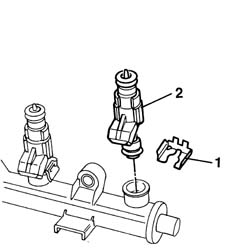
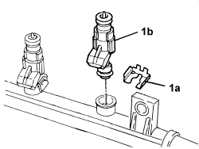

1056B70 injector (one) - r + r with fuel manifold pipe removed - includes seal replacemnt
- Path
- Procedures > 10 ENGINE > 1056 PETROL INJECTION SYSTEM > 1056B MULTI-POINT INJECTION SYSTEM (MPI) > 1056B70 injector (one) - r + r with fuel manifold pipe removed - includes seal replacemnt
- Kind
- repair procedure (removal / refitting; the operation number is the code)
- Applies to
- engines: 1.2 8v, 1.4 8v, 1.6 16v; all production periods
- Interactive page
- https://sloeber94.github.io/elrnDB-fDbl/en/#/2584247
Applies to: engines: 1.2 8v; all production periods
 Removing
Removing
 Refitting
Refitting1. Remove the safety clip.
2. Prise up the injector.

Applies to: engines: 1.2 8v; all production periods
Refitting
RemovingBefore refitting, replace the seals.
Fit the injector by pressing lightly into the seat on the manifold.
Remove the safety clip.
Applies to: engines: 1.6 16v; all production periods
Op. 1056B68 SET OF INJECTORS - R + R WITH FUEL MANIFOLD PIPE REMOVED - INCLUDES SEAL REPLACEMENT.
Applies to: engines: 1.4 8v; all production periods
Removing
Refitting1. Remove clip (1a) and disconnect injector (1b).

Applies to: engines: 1.4 8v; all production periods
Refitting
Removing- Refit the injector in its seat and secure it using the clip.
Topics linked from this page (1)
Topics that link to this page (9)
- W01 HIGH CO EMISSIONS
- W02 CO EMISSIONS LOW, NOx EMISSIONS HIGH
- W05 WHITE EXHAUST FUMES
- W10 BLACK EXHAUST FUMES
- X01 EXCESSIVE FUEL CONSUMPTION
- Z51 RICH FUEL SYSTEM
- Z52 LEAN FUEL SYSTEM
- Z54 MISFIRE ERROR IN ONE CYLINDER
- 1056B68 set of injectors - r + r with fuel manifold pipe removed - includes seal replacement